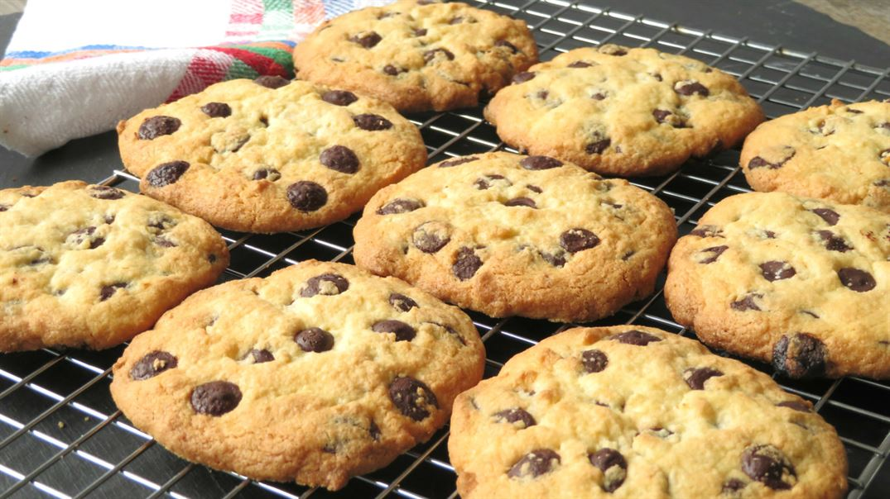

Cookies con chips de chocolate del Tonas
La auténtica receta americana de cookies: crujientes por fuera, tiernas por dentro y cargadas de chocolate.
Fácil
Dificultad30 min
Tiempo6 personas
Raciones458 kcal
por 100 gTiempo de preparación
- Total: Aproximadamente 30 minutos + reposo
- Preparación: 15 minutos
- Reposo: 1 hora en total
- Horneado: 12–14 minutos por tanda
Ingredientes
- 400 g de harina de trigo de todo uso
- 220 g de mantequilla sin sal
- 175 g de azúcar blanco
- 175 g de azúcar moreno
- 2 huevos grandes
- 1/2 cucharadita de extracto de vainilla
- 1/2 cucharadita de sal
- 1 cucharadita de bicarbonato sódico
- 250 g de chips de chocolate o chocolate negro troceado
Sobre esta receta
Estas cookies de chocolate son la versión auténtica americana, con bordes ligeramente crujientes y un centro suave e irresistible.
Son perfectas para merendar, desayunar o darte un capricho a cualquier hora. Lo mejor de todo es que puedes personalizarlas con el tipo de chocolate y el punto de horneado que más te guste.
Consejos para elegir ingredientes
- Chocolate: Si usas chips, mantendrán mejor su forma. Si prefieres un interior más fundido, usa una tableta troceada.
- Harina: La de trigo común funciona genial, aunque puedes usar otras variantes si lo prefieres.
- Mantequilla: Mejor sin sal para controlar tú el punto salado de la receta.
- Azúcar: El azúcar moreno aporta jugosidad y sabor caramelizado, mientras que el blanco da más crujiente.
Instrucciones
- Preparar la base de la masa: Deja la mantequilla a temperatura ambiente hasta que esté blanda. En un bol grande, mezcla la mantequilla con el azúcar blanco y el azúcar moreno hasta conseguir una mezcla cremosa y algo pálida.
- Añadir huevos y vainilla: Incorpora los dos huevos grandes y el extracto de vainilla. Mezcla bien hasta obtener una masa homogénea.
- Incorporar los ingredientes secos: Añade la harina, la sal y el bicarbonato sódico. Mezcla con una espátula o batidora a baja velocidad, sin excederte, para que las cookies no queden tipo bizcocho.
- Añadir el chocolate: Incorpora los chips de chocolate o el chocolate troceado, reservando un pequeño puñado para decorar después.
- Reposar la masa: Si la masa está muy pegajosa, déjala reposar en la nevera durante 30 minutos. Así será mucho más fácil trabajarla.
- Formar las cookies: Haz bolas de masa del tamaño de media mano cerrada o usando una cuchara de helado (aproximadamente 1 cucharada y media). Añade por encima el chocolate reservado.
- Segundo reposo: Coloca las bolas en una bandeja o plato y mételas de nuevo en la nevera durante al menos 30 minutos. Mientras tanto, precalienta el horno a 170°C.
- Hornear: Coloca las bolas sobre una bandeja con papel vegetal dejando bastante espacio entre ellas. Hornea durante 12–14 minutos, o hasta que los bordes empiecen a dorarse.
- Golpe final: Al sacar la bandeja del horno, dale un par de golpecitos suaves contra la encimera para que las cookies bajen un poco y queden con esa textura auténtica americana.
- Reposo y servir: Déjalas reposar 10 minutos en la bandeja antes de moverlas. Así terminan de hacerse y se asientan perfectamente.
Resultado final
Con estas cantidades podrás preparar aproximadamente entre 16 y 30 cookies, dependiendo del tamaño que les des.
| Tamaño | Cantidad aproximada | Textura |
|---|---|---|
| Grandes | 16 unidades | Más tiernas por dentro |
| Medianas | 20–22 unidades | Equilibradas |
| Pequeñas | 28–30 unidades | Más crujientes |